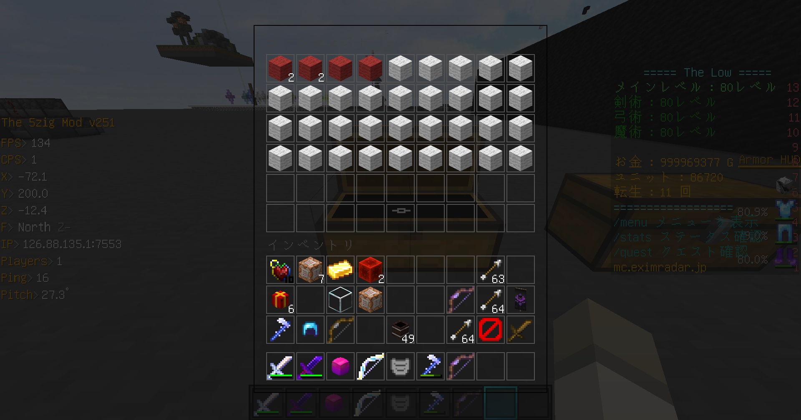

使い方
例えば下のような状況だとする、一枚目の画像が確定枠のチェスト、二枚目の画像が非確定枠のチェストだとする。
確定枠のチェストからは1個、非確定枠のチェストからは2個(ただし、サブ報酬の54枠もある)アイテムが抽選されるとする。
この状況で、赤羊毛が何個出てくるか計算したいとする。


この時、入力は以下のようになる

まずアイテムの出現数に付いて説明する。これは、それぞれのチェストから実際の報酬チェストに何枠抽選されるかを示している。
なので、確定枠からは1個、非確定枠からは2個抽選されるため、それぞれ1と2になっている。
次に、調べたいアイテムがチェストに占める枠数について説明する。これは、目的のアイテム(この場合は赤羊毛)が各チェストに何枠あるかを示している。
なので、確定枠チェストには赤羊毛が4枠、非確定枠には18枠入っているため、それに対応した数字が入力される。
さらに、全アイテムのチェスト内の枠数について説明する。これは、すべてのアイテムが各チェストに何枠あるかを示している。
なので、確定枠チェストにはアイテムが36枠、非確定枠には(54枠+サブ報酬チェストの54枠=)108枠が入っているため、それに対応した数字36,108が入力される。
最後に、調べたいアイテムのスタック数について説明する。これは、目的のアイテム(この場合は赤羊毛)が一枠あたり何個あるかを示している。
なので、確定枠チェストの赤羊毛は1枠に平均6/4=1.5個、非確定枠には18/18=1個入っているため、それに対応した数字1.5,1が入力される。